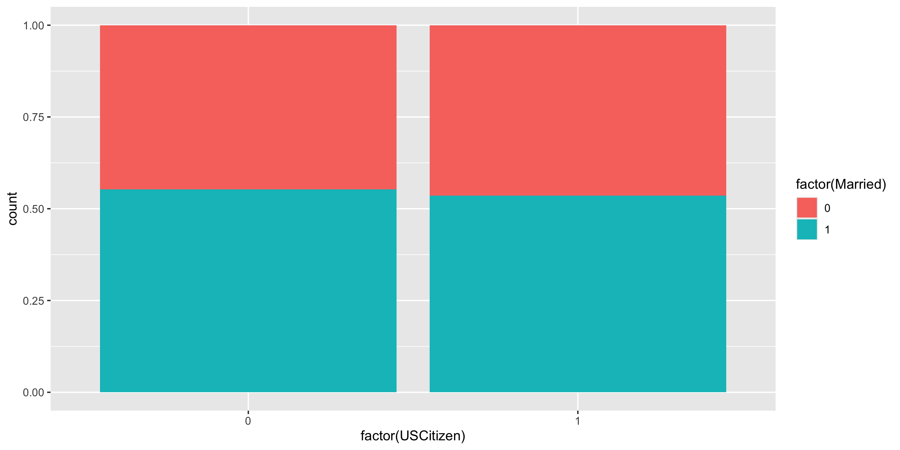
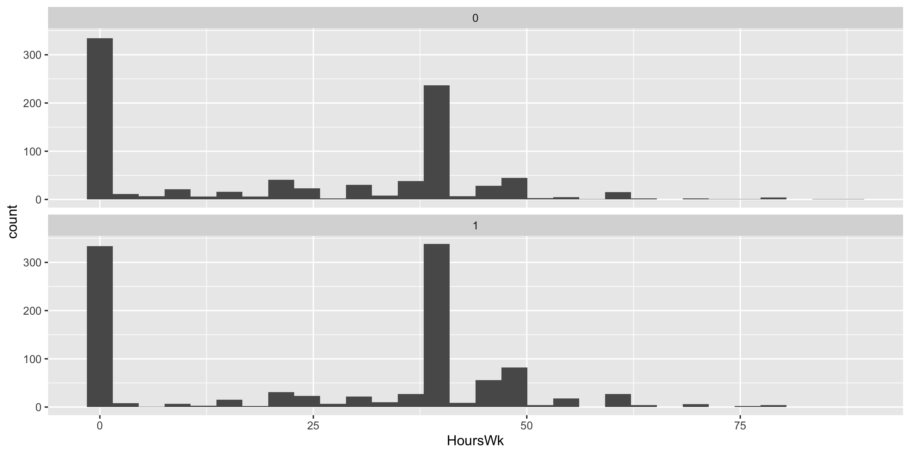

CLT-based inference
Grayson White
Math 141
Week 11 | Fall 2025
Logistics
- Final exam format discussion.
Goals for Today
- Learn theory-based statistical inference methods.
- Theory-based inference for:
- a single mean
- a difference in means
- a difference in proportions
Statistical Inference Zoom Out – Estimation

Statistical Inference Zoom Out – Testing

Recap:
Z-score test statistics:
\[ \mbox{Z-score} = \frac{\mbox{statistic} - \mu}{\sigma} \]
Usually follows a standard normal or a t distribution.
Use the approximate distribution to find the p-value.
Recap:
Formula-Based P*100% Confidence Intervals
\[ \mbox{statistic} \pm z^* SE \]
where \(P(-z^* \leq Z \leq z^*) = P\)
Or we will see that sometimes we use a t critical value:
\[ \mbox{statistic} \pm t^* SE \]
where \(P(-t^* \leq t \leq t^*) = P\)
Recap: Probability Calculations in R
To help you remember:
Want a Probability?
→ use pnorm(), pt(), …
Want a Quantile (i.e. percentile)?
→ use qnorm(), qt(), …
Recap: Probability Calculations in R
Question: When might I want to do probability calculations in R?
Computed a test statistic that is approximated by a named random variable. Want to compute the p-value with
p---()Compute a confidence interval. Want to find the critical value with
q---().To do a Sample Size Calculation.
More CLT-based inference
Inference for a Single Mean
Example: Are lakes in Florida more acidic or alkaline? The pH of a liquid is the measure of its acidity or alkalinity where pure water has a pH of 7, a pH greater than 7 is alkaline and a pH less than 7 is acidic. The following dataset contains observations on a sample of 53 lakes in Florida.
Cases:
Variable of interest:
Parameter of interest:
Hypotheses:
Inference for a Single Mean
Let’s consider conducting a hypothesis test for a single mean: \(\mu\)
Need:
- Hypotheses
- Same as with the simulation-based methods
- Test statistic and its null distribution
- Use a z-score test statistic and a t distribution
- P-value
- Compute from the t distribution directly
Inference for a Single Mean
Let’s consider conducting a hypothesis test for a single mean: \(\mu\)
\(H_o: \mu = \mu_o\) where \(\mu_o\) = null value
\(H_a: \mu > \mu_o\) or \(H_a: \mu < \mu_o\) or \(H_a: \mu \neq \mu_o\)
By the CLT, under \(H_o\):
\[ \bar{x} \sim N \left(\mu_o, \frac{\sigma}{\sqrt{n}} \right) \]
Z-score test statistic:
\[ Z = \frac{\bar{x} - \mu_o}{\frac{\sigma}{\sqrt{n}}} \]
- Problem: Don’t know \(\sigma\): the population standard deviation of our response variable!
Inference for a Single Mean
Z-score test statistic:
\[ t = \frac{\bar{x} - \mu_o}{\frac{s}{\sqrt{n}}} \]
- Problem: Don’t know \(\sigma\): the population standard deviation of our response variable!
- For our example, \(\sigma\) would be the standard deviation of the Ph level for all lakes in Florida.
- Solution: Plug in \(s\): the sample standard deviation of our response variable!
- For our example, \(s\) would be the standard deviation of the Ph level for the sampled lakes in Florida.
- Use \(t(\mbox{df} = n - 1)\) to find the p-value
Inference for a Single Mean
Inference for a Single Mean
What probability function is a good approximation to the null distribution?
Inference for a Single Mean
What probability function is a good approximation to the null distribution?
P-value options
Recall the CLT:
Central Limit Theorem (CLT): For random samples and a large sample size \((n)\), the sampling distribution of many sample statistics is approximately normal.
Sample Proportion Version:
When \(n\) is large (at least 10 successes and 10 failures):
\[ \hat{p} \sim N \left(p,~ \sqrt{\frac{p(1-p)}{n}} \right) \]
Sample Mean Version:
When \(n\) is large (at least 30):
\[ \bar{x} \sim N \left(\mu,~ \frac{\sigma}{\sqrt{n}} \right) \]
There Are Several Versions of the CLT!
| Response | Explanatory | Numerical_Quantity | Parameter | Statistic |
|---|---|---|---|---|
| quantitative | - | mean | \(\mu\) | \(\bar{x}\) |
| categorical | - | proportion | \(p\) | \(\hat{p}\) |
| quantitative | categorical | difference in means | \(\mu_1 - \mu_2\) | \(\bar{x}_1 - \bar{x}_2\) |
| categorical | categorical | difference in proportions | \(p_1 - p_2\) | \(\hat{p}_1 - \hat{p}_2\) |
| quantitative | quantitative | correlation | \(\rho\) | \(r\) |
- Refer to these tables for:
- CLT’s “large sample” assumption
- Equation for the test statistic
- Equation for the confidence interval
Let’s cover examples of theory-based inference for two variables.
Data Example
We have data on a random sub-sample of the 2010 American Community Survey. The American Community Survey is given every year to a random sample of US residents.
# Libraries
library(tidyverse)
library(Lock5Data)
# Data
data(ACS)
# Focus on adults
ACS_adults <- filter(ACS, Age >= 18)
glimpse(ACS_adults)Rows: 1,936
Columns: 9
$ Sex <int> 0, 1, 0, 0, 1, 1, 0, 0, 0, 0, 1, 0, 0, 0, 0, 0, 1, 1, …
$ Age <int> 38, 18, 21, 55, 51, 28, 46, 80, 62, 41, 37, 42, 69, 48…
$ Married <int> 1, 0, 0, 1, 0, 0, 0, 0, 1, 1, 0, 0, 0, 1, 1, 1, 0, 0, …
$ Income <dbl> 64.0, 0.0, 4.0, 34.0, 30.0, 13.7, 114.0, 0.0, 0.0, 0.0…
$ HoursWk <int> 40, 0, 20, 40, 40, 40, 60, 0, 0, 0, 40, 42, 0, 60, 0, …
$ Race <fct> white, black, white, other, black, white, white, white…
$ USCitizen <int> 1, 1, 1, 0, 1, 1, 1, 1, 1, 1, 1, 1, 1, 1, 1, 1, 1, 0, …
$ HealthInsurance <int> 1, 1, 1, 0, 1, 0, 1, 1, 1, 1, 0, 1, 1, 1, 1, 1, 1, 0, …
$ Language <int> 1, 1, 1, 0, 1, 0, 0, 0, 1, 1, 1, 1, 1, 1, 1, 1, 1, 0, …Difference in Proportions
Let’s try to determine if there’s a relationship between US citizenship and marriage status.
Response variable:
Explanatory variable:
Parameter of interest:
Sample size requirement for theory-based inference:
Difference in Proportions
Let’s try to determine if there’s a relationship between US citizenship and marriage status.

Difference in Proportions
Let’s try to determine if there’s a relationship between US citizenship and marriage status.
Why isprop_test() failing?
Difference in Proportions
Let’s try to determine if there’s a relationship between US citizenship and marriage status.
ACS_adults %>%
mutate(MarriedCat = case_when(Married == 0 ~ "No",
Married == 1 ~ "Yes"),
USCitizenCat = case_when(USCitizen == 0 ~ "Not citizen",
USCitizen == 1 ~ "Citizen")) %>%
prop_test(MarriedCat ~ USCitizenCat,
order = c("Citizen", "Not citizen"), z = TRUE,
success = "Yes")# A tibble: 1 × 5
statistic p_value alternative lower_ci upper_ci
<dbl> <dbl> <chr> <dbl> <dbl>
1 -0.380 0.704 two.sided -0.101 0.0682Difference in Means
Let’s estimate the average hours worked per week between married and unmarried US residents.
Response variable:
Explanatory variable:
Parameter of interest:
Sample size requirement for theory-based inference:
Difference in Means
Let’s estimate the average hours worked per week between married and unmarried US residents.

Difference in Means
Let’s estimate the average hours worked per week between married and unmarried US residents.
Which arguments for t_test() reflect my research question?
Correlation
We want to determine if age and hours worked per week have a positive linear relationship.
Response variable:
Explanatory variable:
Parameter of interest:
Sample size requirement for theory-based inference:
Correlation
We want to determine if age and hours worked per week have a positive linear relationship.
Correlation
We want to determine if age and hours worked per week have a positive linear relationship.
Pearson's product-moment correlation
data: HoursWk and Age
t = -17.007, df = 1934, p-value = 1
alternative hypothesis: true correlation is greater than 0
95 percent confidence interval:
-0.3927809 1.0000000
sample estimates:
cor
-0.360684 Correlation
We want to determine if age and hours worked per week have a positive linear relationship.